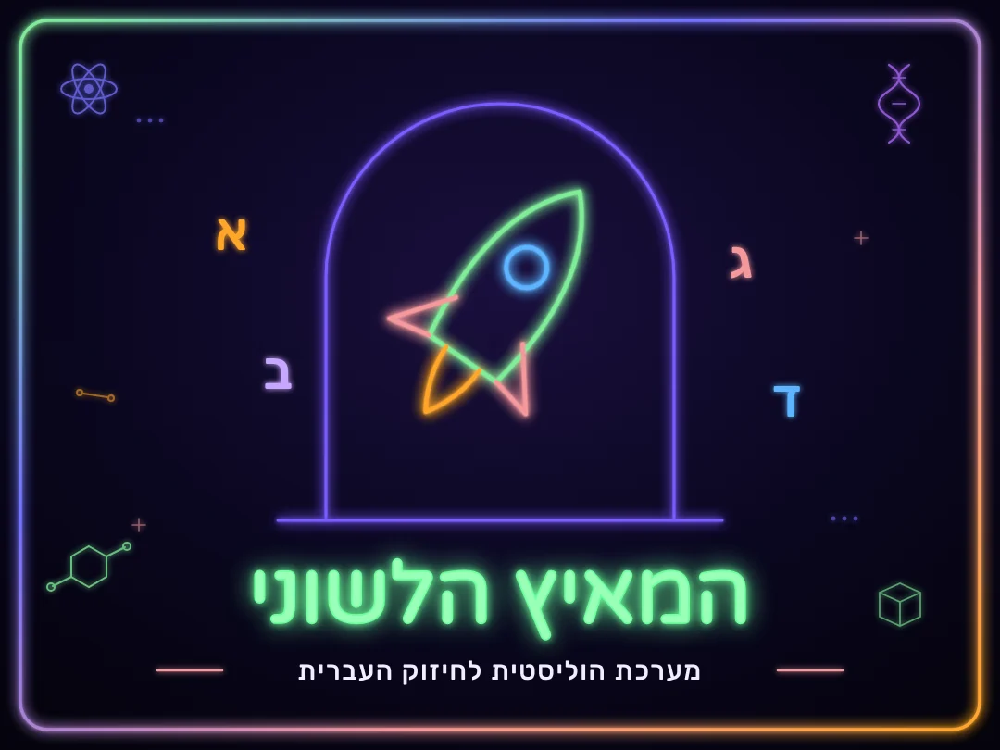
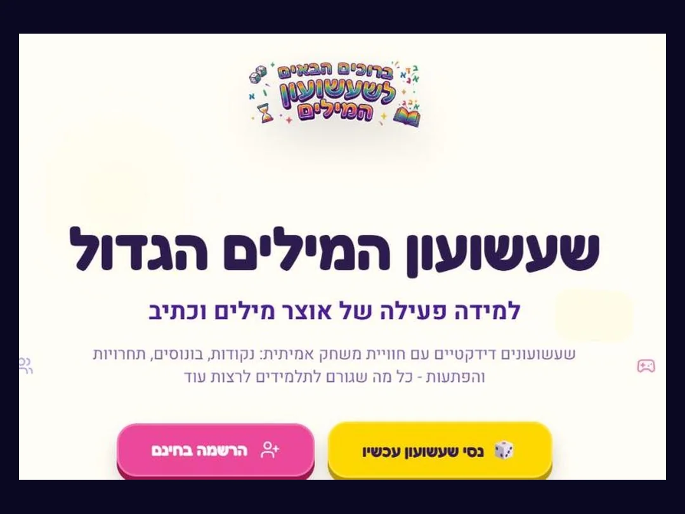
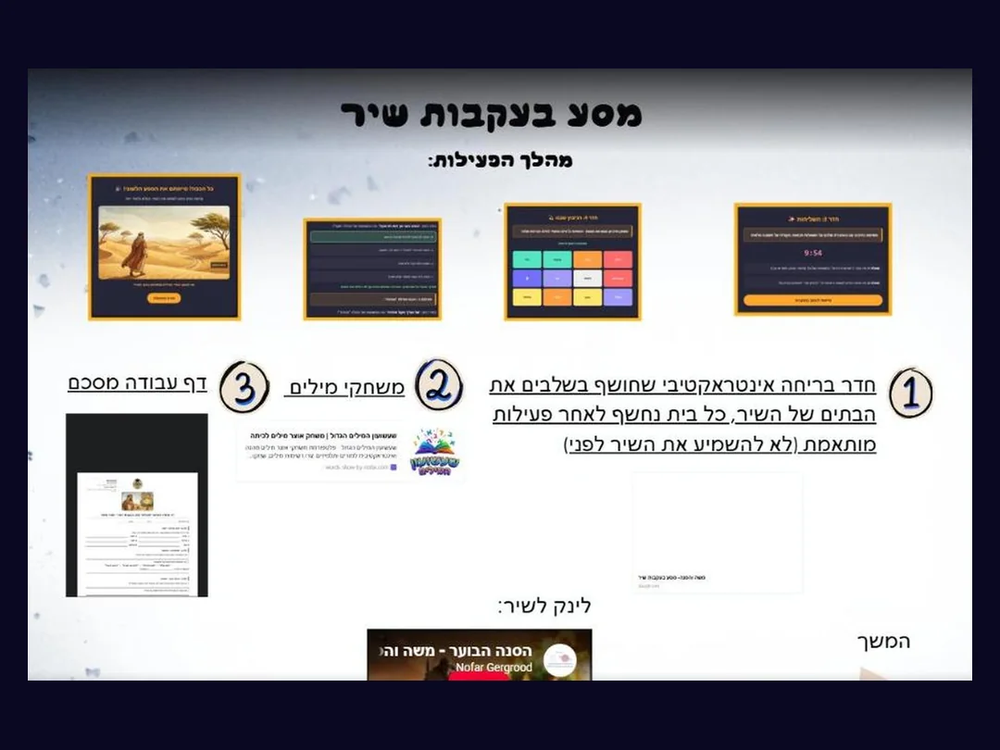
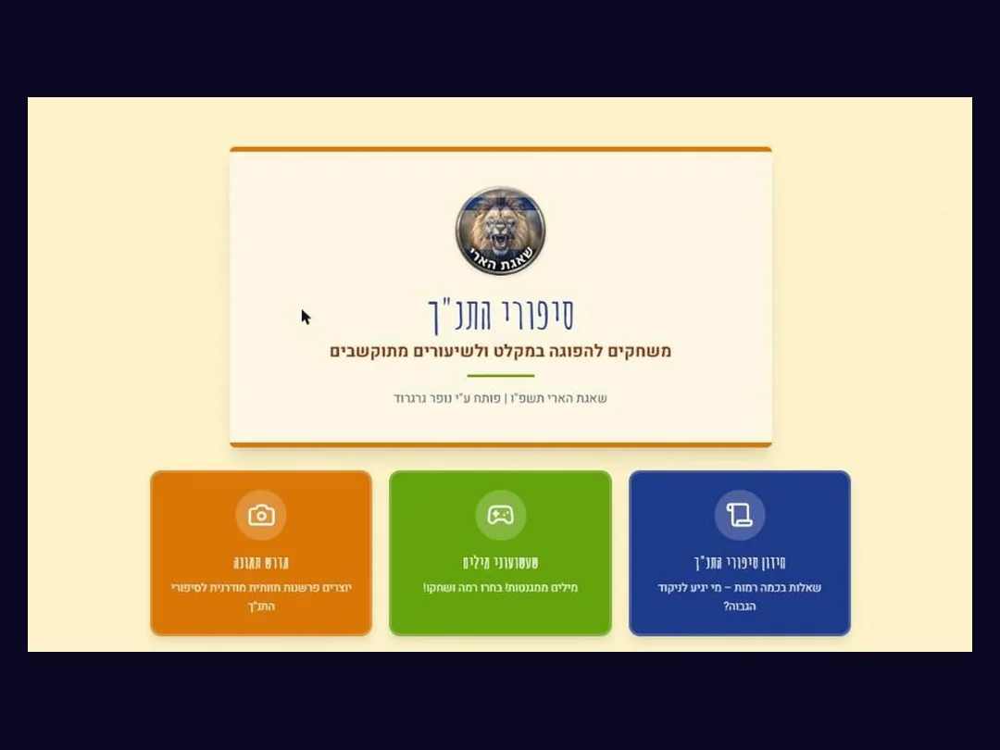
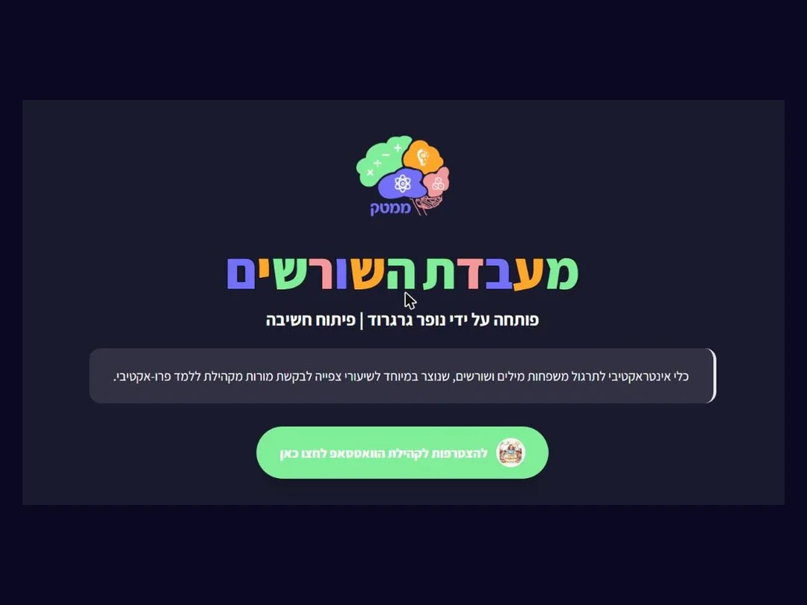
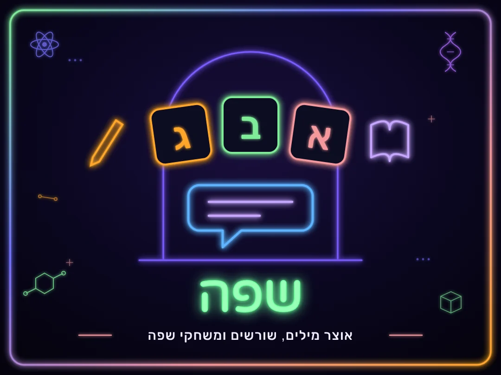
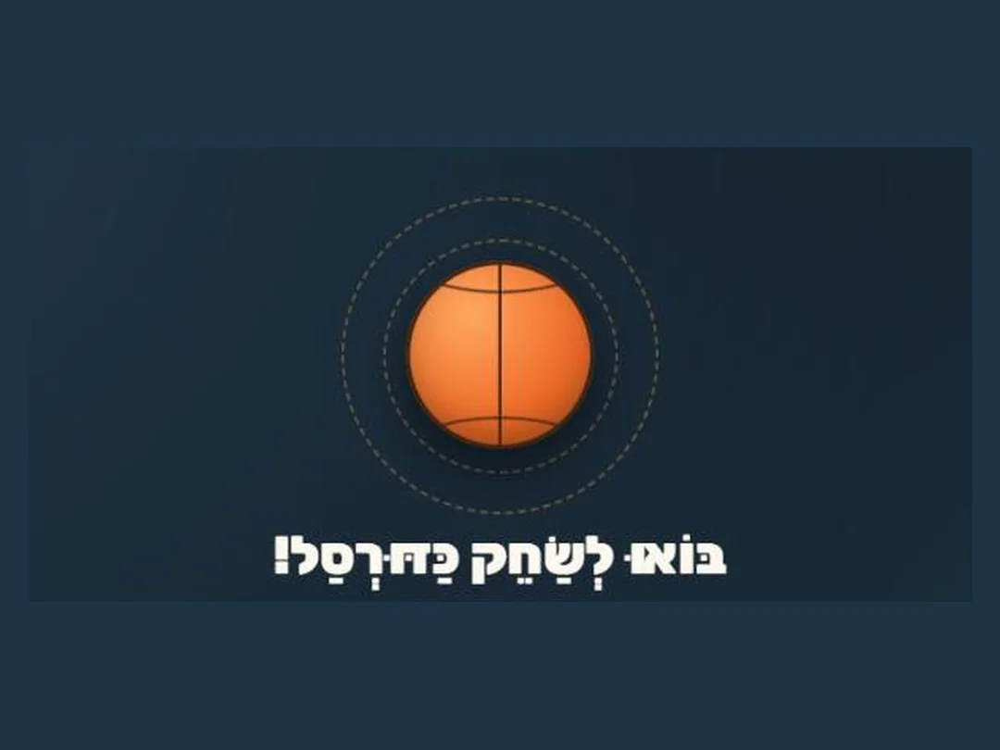
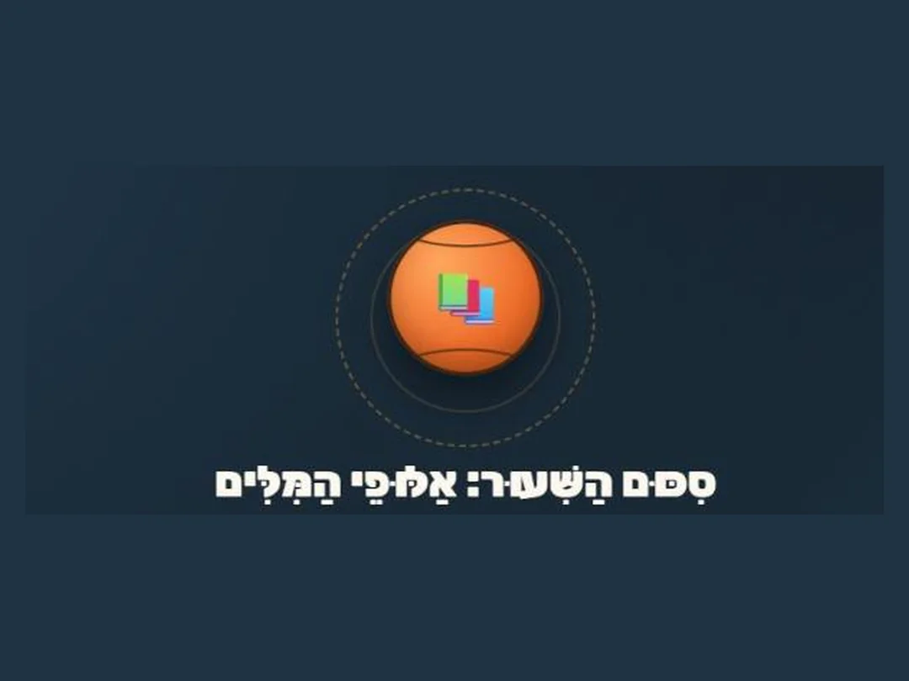
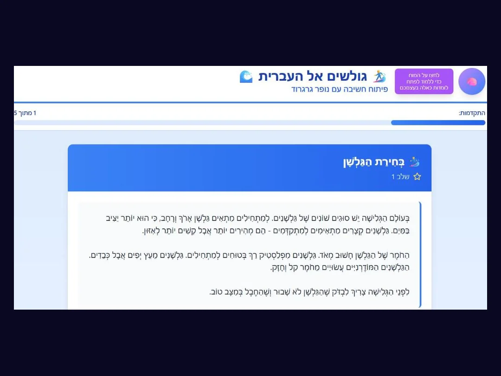
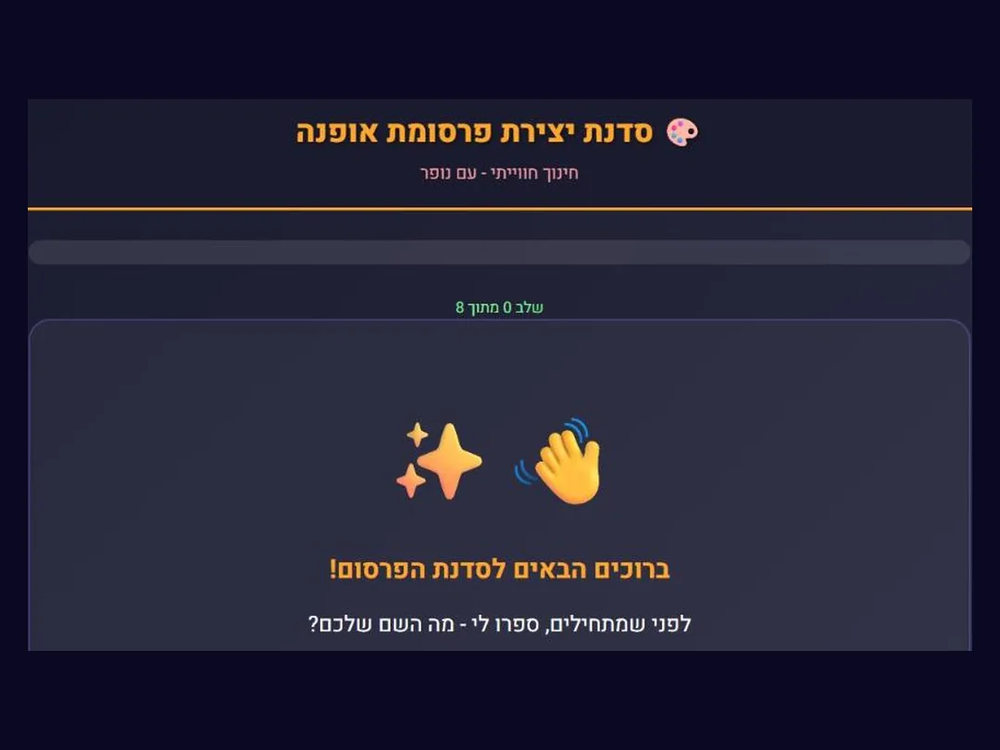

עולם השפה החווייתי
כלים, משחקים ופעילויות לאוצר מילים, כתיב, שורשים והבנה. מתאימים לכל שכבות הגיל, א-יב.
ערכה להאצת שפה - למורה ולכיתה
תוכנית מלאה · לחיצה פותחת את עמוד הערכה
המאיץ הלשוני
מערכת הוראה הוליסטית לחיזוק העברית, שעובדת על כל רבדי השפה.
- סולם של טקסטים מדורגים
- מחוון צמיחה אישית לכל תלמיד
- רכיבים פיזיים ודיגיטליים
- משחקים אינטראקטיביים, כולל שעשועון המילים
בחרו כלי
9 כלים · לחיצה פותחת בלשונית חדשה
שעשועון המילים הגדול
למידה פעילה של אוצר מילים וכתיב: שעשועונים עם נקודות, בונוסים ותחרויות, על רשימת מילים משלכם.
←כניסה לכלי01
מסע בעקבות שיר
חדר בריחה שחושף את בתי השיר שלב אחרי שלב, ואחריו משחקי מילים ודף עבודה מסכם.
←כניסה לכלי02
סיפורי התנ"ך
חידון בכמה רמות, שעשועוני מילים ומדרש תמונה - פלטפורמה ייחודית לשיעור מגוון.
←כניסה לכלי03
מעבדת השורשים
תרגול משפחות מילים ושורשים, בגרסה מנוקדת או ללא ניקוד.
←כניסה לכלי04
בוטית רשימות המילים
נותנים לה בקצרה את מאפייני הכיתה, והיא נותנת רשימת מילים מותאמת ותוכנית למידה: כיצד ללמד אותן בכיתה.
←כניסה לכלי05
כדורסל - שיעור קריאה
קוראים יחד שלושה קטעים קצרים מנוקדים, עונים על שאלות, ואחרי כל קטע משחקים משחק קליעה לסל.
←כניסה לכלי06
כדורסל - אלופי המילים
סיכום השיעור: קוראים את הרמז וקולעים את המילה הנכונה ישר לסל. חזרה על כל המילים החשובות.
←כניסה לכלי07
גולשים אל העברית
5 שלבים של קטעי קריאה מנוקדים מעולם הגלישה, עם שאלות והתקדמות משלב לשלב.
←כניסה לכלי08
סדנת פרסומת אופנה
סדנה מודרכת ב-8 שלבים ליצירת פרסומת אופנה - כתיבה, שכנוע ויצירתיות, צעד אחר צעד.
←כניסה לכלי09